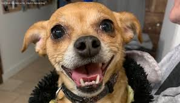
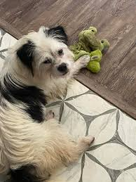
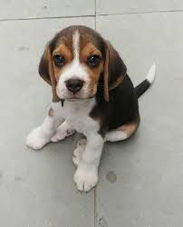
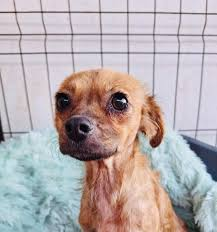

Locul perfect unde sa iti gasesti cel mai bun prieten.
Se spune despre caini ca sunt cei mai buni prieteni ai omului. Descopera catelusii disponibili si fa-l pe unul dintre ei noul tau prieten!
A fost salvata de pe strada acum patru zile. Am descoperit ca ii plac zmeurele.
A venit singur la noi sa ceara mancare. E foarte pufos si dragastos.
Proprietarii l-au adus cand era pui. Acum are doua luni si e cel mai cuminte catel.
A fost salvata dintr-o parcare subterana, unde fusese abandonata. Iubeste sa fie pupata pe cap.
